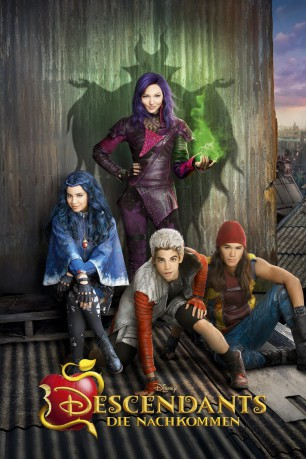

#3573 Descendants - Die Nachkommen
Alternativ: Descendants
 
 IMDB-Wertung: 6.4 / 10
IMDB-Wertung: 6.4 / 10  Metascore: 0
Metascore: 0 
Im Königreich Auradon leben alle berühmten Disney-Helden glücklich und zufrieden zusammen. Der Sohn von König Biest und Königin Belle, Ben, steht kurz vor seiner Thronbesteigung. Seine erste Amtshandlung besteht darin, die Kinder der vier bösesten Disney-Schurken nach Auradon einzuladen, wo sie ab sofort die Elite-Schule besuchen sollen, um eine Chance auf ein besseres Leben zu erhalten. Doch die Eltern von Mal, Carlos, Jay und Evvie führen böses im Schilde, denn mit dem Zauberstab der guten Fee könnten sie wieder ihre alte Macht erlangen und alle unterwerfen. Nun müssen sich die vier "Schurken-Kids" entscheiden: Entweder sie machen ihre Eltern stolz und wählen das Leben eines Bösewichts oder aber sie ändern sich.
DUBBED
Jahr: 2015
Dauer: 112 Minuten
FSK: 0
Land: USA Studio: Disney ChannelTonspuren: DD2.0 - ,
Untertitel:
Auflösung: 1080p (1920x1080) Größe: 6266 MB
Genre: Action, Komödie, Abenteuer, Fantasy
Regisseur: Kenny Ortega
Drehbuch: Vuk Rsumovic
Soundtrack:
Darsteller:
 Dove Cameron als Mal
Dove Cameron als Mal Cameron Boyce als Carlos
Cameron Boyce als Carlos Booboo Stewart als Jay
Booboo Stewart als Jay- Sofia Carson als Evie
- Mitchell Hope als Ben
- Melanie Paxson als Fairy Godmother
- Brenna D'Amico als Jane
- Sarah Jeffery als Audrey
 Jedidiah Goodacre als Chad Charming
Jedidiah Goodacre als Chad Charming- Dianne Doan als Lonnie
 Dan Payne als Beast
Dan Payne als Beast Keegan Connor Tracy als Belle
Keegan Connor Tracy als Belle- Wendy Raquel Robinson als Cruella de Vil
- Maz Jobrani als Jafar
 Kathy Najimy als Evil Queen
Kathy Najimy als Evil Queen Kristin Chenoweth als Maleficent
Kristin Chenoweth als Maleficent- Shaughnessy Redden als Limo Driver
 Reese Alexander als Coach Jenkins
Reese Alexander als Coach Jenkins- Wesley Salter als Photographer
- Ken Lawson als Royal Tailor
- Stephanie Bennett als Snow White
 Jonathan Holmes als Mr. Deley
Jonathan Holmes als Mr. Deley- Christian Lagasse als Footman #1
- J.P. Dubé als Dancer and Chorus Performer
- Tony Giroux als Dancer and Chorus Performer
- Jeff Mortensen als Dancer and Chorus Performer
 Louise Hradsky als Dancer and Chorus Performer
Louise Hradsky als Dancer and Chorus Performer- Megan Trainer als Dancer and Chorus Performer
- Jennifer Oleksiuk als Dancer and Chorus Performer
- Kelly Konno als Dancer and Chorus Performer
 Taylor James als Dancer and Chorus Performer
Taylor James als Dancer and Chorus Performer- Kyal Legend als Dancer and Chorus Performer
- Richard McBride als Custodian / Dancer and Chorus Performer
- Jasmine Chan als Cheerleader
- Salina Marie Carter als Broken Arm Girl , uncredited
 Vicky Lambert als Teacher , uncredited
Vicky Lambert als Teacher , uncredited- Amro Majzoub als Royal Attendant , uncredited
- Weston Mueller als Grumpy Student , uncredited
- Tessa Netting als Student , uncredited
- Ben Stillwell als Happy Student , uncredited
- Zachary Gibson als Doug
- James Hibbard als Museum Guard
- Judith Maxie als Queen Leah
- Peter Schaad als Tourney Announcer
- Vancouver Children's Choir Choral Society als Children's Choir
- Paisley als Dude the Dog
- Addy Chan als Dancer and Chorus Performer
- Danny De Matos als Dancer and Chorus Performer
- Devin Jameson als Dancer and Chorus Performer
- Shane Simpson als Dancer and Chorus Performer
Datei: X:\Kinder Disney HD\Descendants\Descendants - Die Nachkommen (2015, FSK0, 1920x1080).mkv seit 05.05.2016
Festplatte: Kinder-Filme+Trick
 Alle Filme aus Gruppe 'Kinder Disney HD\Descendants'
Alle Filme aus Gruppe 'Kinder Disney HD\Descendants'